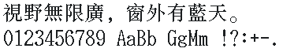

字样资料 / IBM AIX / ISAS Cjk_song
IBM AIX / ISAS 繁体宋体 · 24点字面
原UCS2编码CNS平面1／2含5,411＋7,650＝13,061个非空U+3400–9FFF汉字，两平面无汉字交集。Python Big5的13,061汉字中同Unicode覆盖13,060；“彝／彞”不互换，不称完整Big5。Roman配套95个可打印ASCII。 · 24px字面 · 存储 26×27 · 繁体
放大观察 · 3×

原尺寸 · 1×
来源与字样信息
- 家族
- IBM AIX / ISAS Cjk_song
- 有效字面筛选
- 24px；存储字框与边距另列
- 排版说明
- 按24点有效中文字面筛选；中文原字框26×27、advance 26，ASCII 13×27、advance 13；共同ascent 26／descent 1。两行四周4px、行间4px，保留存储空白和原字进，不裁边、不缩放、不额外加字距。
- 字符框
- 26×27 px
- 字面／墨迹
- 24×24 px
- 字符范围
- 繁体
- 样本文字
- 視野無限廣，窗外有藍天。
- 拉丁样文
- 0123456789 AaBb GgMm !?:+-.
- 覆盖说明
- 原UCS2编码CNS平面1／2含5,411＋7,650＝13,061个非空U+3400–9FFF汉字，两平面无汉字交集。Python Big5的13,061汉字中同Unicode覆盖13,060；“彝／彞”不互换，不称完整Big5。Roman配套95个可打印ASCII。
- 缺字
- 样文无缺字
- 样张类型
- 原生24点汉字字面，保留26×27存储框；配同源13×27 Roman ASCII，不缩放、不补字。
- 风格
- 宋体
- 用途
- 操作系统
- 字形来源
- 静态读取AIX 4.1.5第1盘X11.fnt中的cns1ucs.pcf、cns2ucs.pcf与Roman27ucs.pcf，未执行安装器或旧程序。1993／1992是字库版权标记，不证明首次设计日期或逐字手绘历史。
- 授权状态
- 原中文标注Permission to use；未确认开放再分发授权
- 许可说明
- 中文PCF原文“(C) 1993, ISAS. Permission to use.”，Roman为“Copyright 1992 by IBM.”。不将简短使用声明扩大为商用或再分发授权。仅展示固定PNG、聚合审计与无字模重绘方法，不附PCF、完整BDF或光盘。
- 说明
- 与已有ISAS宋24属于同源繁体扩展：共享4,382汉字中1,427裁白同形（32.57%），另8,679字不在该简体字集中。ETen24、HP24、DEC24分别仅1字裁白相同，DEC32为零。221份历史BDF及234条基线的233张非reference样图补查仍不等于全库完整来源已比完。CNS1全宽方括号与Roman半宽[]同码异图，固定句不含[]；未来完整导出须明确Roman ASCII优先并保留CNS原槽，本次不导出完整字体。
- 获取方式
自行确认使用权后从对应原盘取得三份精确SHA的PCF。工具仅离线重绘固定样文，不导出完整字库，不授予商用或再分发权。
- 来源
- IBM AIX 4.1.5 RS/6000 原盘存档资料页
- 原生证据
说明：固定SHA原PCF；独立raw／Pillow核验全部13,642字形、9,532,107像素及编码／度量一致。原27px行格不是新的27点字面。
hanCopyrightYear：1993
asciiCopyrightYear：1992
hanPlane1：5411
hanPlane2：7650
hanUnicodeCount：13061
big5HanCovered：13060
big5HanTotal：13061
printableAscii：95
storageCell：26、27
maxHanInk：24、24
asciiWidth：13
fontAscent：26
fontDescent：1
字体使用与再分发按原来源许可执行。